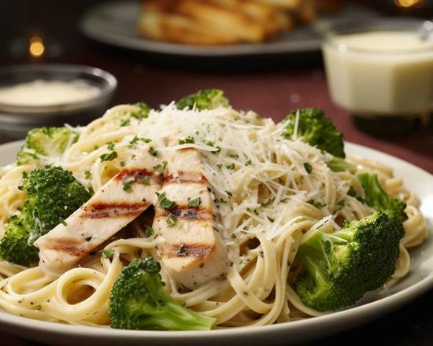

Atlanta · 24/7 delivery · by Chef Relentless Aaron
XX Double Chicken Pasta Alfredo: Two Servings, One Order
The listing calls it our most popular dish, and the XX doubles it. Two servings of chicken, pasta and Alfredo sauce in one order, so nobody has to share their half.

How we make our XX Chicken Pasta Alfredo (Double)
Chicken slices are seasoned and cooked until tender, then layered over a double portion of fresh pasta.
The Alfredo sauce is made smooth and creamy and tossed through the pasta while it is still hot so it soaks in. Seasoning is adjusted to taste, and Cajun spice is yours if you ask.
It is packed hot and sealed for the trip, so it arrives ready to split onto two plates.
The love that goes into every plate
Feeding two people well is a small act of love. Chef Relentless Aaron built the XX for couples, roommates and families who want one order that covers everybody.
What comes with it
Two servings of chicken pasta Alfredo with seasoning, plus Cajun spice on request.
Find it in the app as
- Uber Eats: Double Chicken Pasta Alfredo (2 Servings)
Look for these names when you open the app. Prices, sizes and availability are set in each app and can change.
Order XX Chicken Pasta Alfredo (Double) 24/7 in Atlanta
We cook around the clock, seven days a week. Whether it is lunch, dinner or a 3 a.m. craving, open DoorDash (Gourmet Grub) or Uber Eats (Relentless Eats) and we will get it cooking.